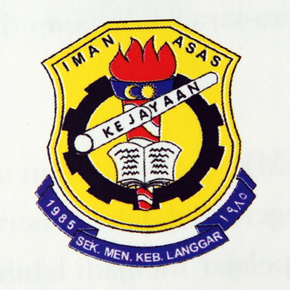

EDUCATION BACKGROUND
- Primary School
- Sekolah Kebangsaan Langgar
- Secondary School

- Sekolah Menengah Kebangsaan Langgar
- University
- University Teknology Mara (UITM)
Course: Diploma of Information Management (IM110)
Extra-Curricular Activities in School
- Primary School
- - Active in foot marches that held by
the school and entering the school level
competition between other school.
- Secondary School
- -Still active in the foot marches and
entering the school level competitions.
Award and Achievement
- 3rd place for the Primary School
- - Active in foot marches.
- Secondary School
- -1st place in the uniformed unit for the
co-curiculum activities.
- -1st place in the competition level
between other class.
- -1st place for the beautiful decoration
for class in the competition that held
by the school.